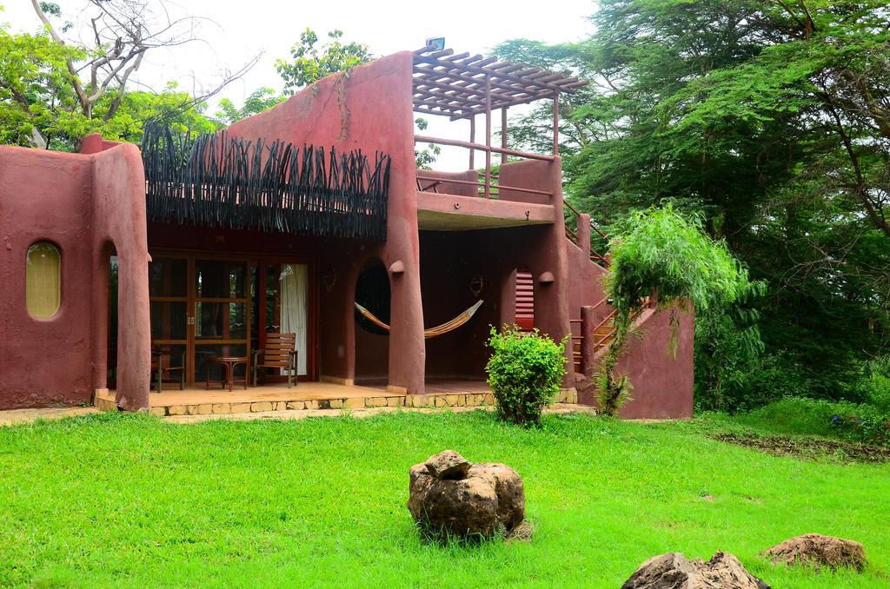
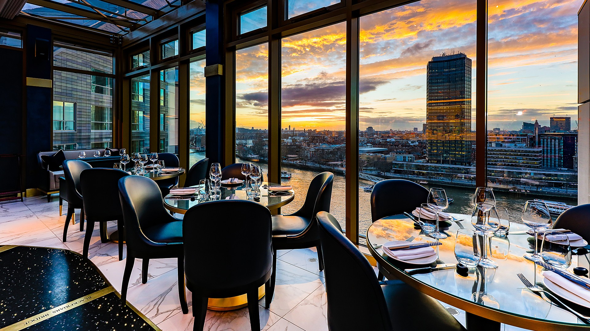
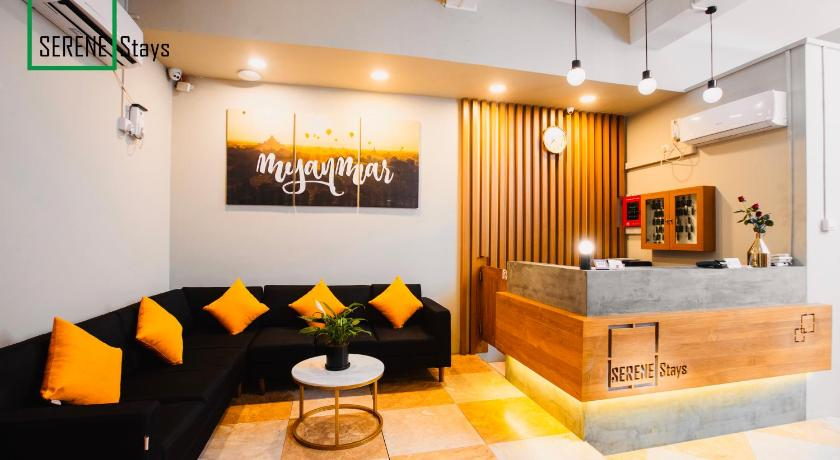
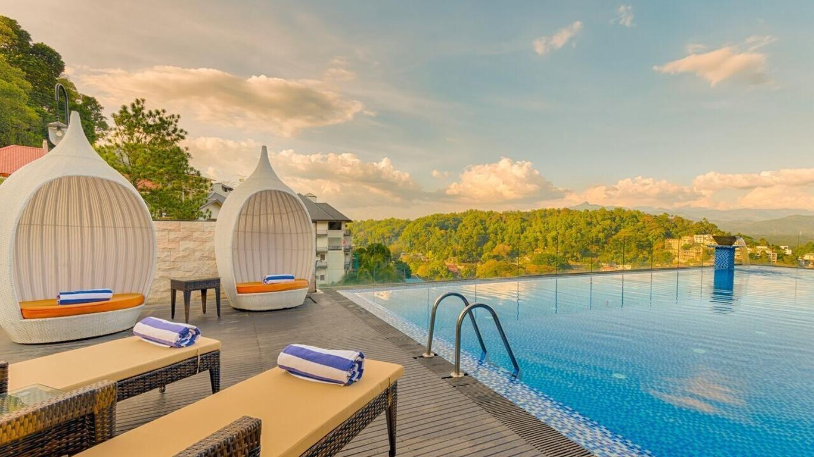
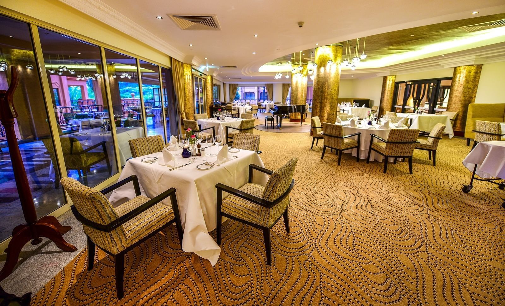
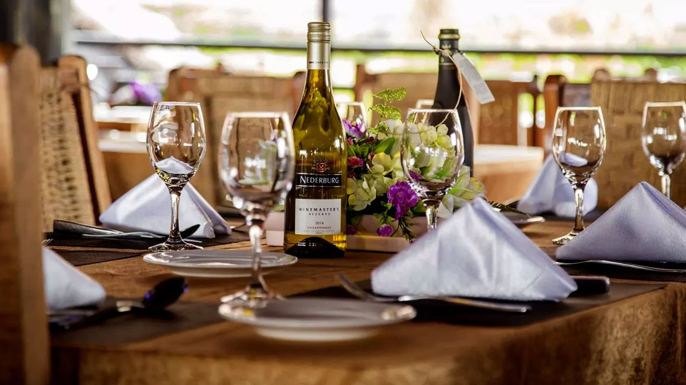

 Welcome to The Joint Barbeque, a contemporary style hotel that provides all the comfort, convenience and efficiency to the discerning clientelle. Ideally located behind susu center in Machakos,Kenya, The Joint Barbeque Machakos features 3 well-appointed sections, restaurant & bar, ample parking space, gift shop, dedicated kitchen among other top facilities offering the best choice venue for your Business and Leisure stay.

The mission of the Joint Barbeque is to put hospitality services on the highest level in order to satisfy the demands and expectations of guests. Our aim is to make the Hotel Grand a place for encounters, business success, pleasant meetings and gala ceremonies.
The ideology of our vision is to continue to apply and set the highest standards of service quality and in that way justify and uphold the reputation that we have among the guests, partners, competitors and the wider community. We use and constantly introduce environmentally friendly technologies and processes in order to remain in balance with nature and also meet the needs of contemporary society.Tradition is a testament to our success but in the future we also want to embrace the changes that modern time brings and become more attractive in the market and more interesting to our guests and partners.
 Since opening its doors in 2023, The Joint Barbeque; a secluded gem in the heart of Machakos is set to be a celebrated Kenyan landmark with ample dining and events space set around tranquil tropical gardens, a modern kitchen and unique dining facilities.Unlimited business internet access in all public spaces is available to all guests.The hotel is accessible to those using wheelchairs. There are several wheelchair accessible rooms.The gift shop offers a wide assortment of souvenirs, postcards, books and memorabilia, as well as Kenyan artefacts and jewellery. The gift shop is open weekdays between 7:00 a.m. and 11:00 p.m. On Saturday, Sunday & on public holidays, the shop is open from 10:00 a.m. to 7:00 p.m.
 Fairmont The Norfolk is pleased to present Nairobi vacation packages and special offers created with your comfort and enjoyment in mind. Whether you are in town for business or leisure, we have a special experience just for you!
 From seasonally inspired menus to dining experiences that will satisfy any craving, see what our chefs are preparing just for you.
 We offer several meeting and event venues—and a dedicated conference and catering team.